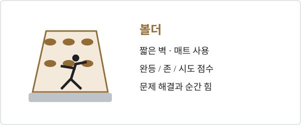

경기 방식

2025–2026 대회 성적
2025
| 대회 · 날짜 | 남자 볼더 |
|---|---|
| 2025 시즌 최종 순위시즌 TOP 10 | JPNANRAKU1FRASCHALCK2JPNAMAGASA3KORLEE4BELVAN DUYSEN5FRAJENFT6JPNNARASAKI7SLOPEHARC8JPNNARASAKI9CHNPAN10 |
| 서울 · 2025.09.21–28세계선수권 | JPNANRAKU1FRASCHALCK2KORLEE3JPNNARASAKI4JPNNARASAKI5AUTPOSCH6GERBLOEM7GBRMACDOUGALL8 |
| Keqiao · 18–20 April월드컵 | JPNANRAKU1KORLEE2JPNNARASAKI3 |
| Curitiba · 16–18 May월드컵 | JPNANRAKU1FRASCHALCK2JPNNARASAKI3 |
| Salt Lake City · 23–25 May월드컵 | JPNANRAKU1JPNAMAGASA2KORLEE3 |
| Prague · 6–8 June[17][18]월드컵 | FRASCHALCK1JPNANRAKU2FRARICHARD3 |
| Bern · 13–15 June월드컵 | CHNPAN1FRASCHALCK2JPNANRAKU3 |
| Innsbruck · 25 – 29 June월드컵 | GBRROBERTS1JPNANRAKU2BELVAN DUYSEN3 |
| OVERALL월드컵 | JPNANRAKU1FRASCHALCK2JPNAMAGASA3 |
2026
| 대회 · 날짜 | 남자 볼더 |
|---|---|
| 2026 시즌 중간 순위시즌 TOP 10 | JPNANRAKU1KORLEE2FRASCHALCK3BELVAN DUYSEN4JPNKAWAMATA5USADUFFY6GBRMILNE7CHNPAN8JPNNARASAKI9FRARICHARD10 |
| Keqiao · 1–3 May월드 시리즈 | JPNANRAKU1KORLEE2FRASCHALCK3 |
| Bern · 22–24 May월드 시리즈 | JPNANRAKU1FRASCHALCK2BELVAN DUYSEN3 |
| Madrid · 28–31 May월드 시리즈 | JPNANRAKU1USADUFFY2FRARICHARD3 |
| Prague · 3–7 June월드 시리즈 | JPNANRAKU1KORLEE2FRASCHALCK3 |
| Innsbruck · 17–21 June월드 시리즈 | JPNANRAKU1JPNKAWAMATA2KORLEE3 |
| Salt Lake City · 16–18 October월드 시리즈 | 예정 |
2027–2028 주요 예선
| 대회 · 날짜 | 구분 / 출전권 | 남자 볼더 |
|---|---|---|
| 이스탄불 · 06.16–27LA28 직접 예선 | 유럽게임¹ · 종목별 1장 | 예정 |
| 리마 · 07.24–08.08LA28 직접 예선 | 팬아메리카게임¹ · 종목별 1장 | 예정 |
| 브르노 · 08.13–22LA28 직접 예선 | 세계선수권 · 종목별 1장 | 예정 |
| 남아프리카 · 10.07–10LA28 직접 예선 | 아프리카 예선 · 종목별 1장 | 예정 |
| 호주 · 10.14–17LA28 직접 예선 | 오세아니아 예선 · 종목별 1장 | 예정 |
| 상하이 · 11.10–14LA28 직접 예선 | 아시아 예선 · 종목별 1장 | 예정 |
| 도쿄 · 05.04–07올림픽 Q-시리즈 | 시리즈 합산² | 예정 |
| 상하이 · 05.11–14올림픽 Q-시리즈 | 시리즈 합산² | 예정 |
| 올랜도 · 06.08–11올림픽 Q-시리즈 | 시리즈 합산² | 예정 |
¹ 유럽게임·팬아메리카게임 날짜는 종합대회 전체 기간이다. 클라이밍 세부 경기 날짜와 참가 자격은 별도 공지를 확인해야 한다. 한국 선수의 대륙 경로는 아시아 예선이다.
² Q-시리즈 출전권은 세 대회 합산으로 배정한다. 성별 최소 리드 4장·볼더 4장·스피드 6장이며, 각 개최지마다 같은 수를 배정하는 뜻이 아니다. 2027 직접 예선의 ‘1장’은 성별·종목별 기준이다.
자료와 표의 범위
확인일 2026.10.11. 대회별 표는 메달리스트, 시즌 표는 상위 10명이다. 2025 세계선수권은 리드·볼더 결승 순위와 스피드 메달리스트를 수록했다. 한국 선수는 파란색으로 표시한다. 각 선수 줄은 국적 · 성 · 순위 순서이며, 전체 이름은 마우스를 올리면 나온다. 성이 같은 선수의 구별에도 전체 이름을 사용한다. 공동 순위는 원자료대로 표시한다.
2026 시즌 순위는 확보한 자료의 중간 순위이며 확정 최종 순위가 아니다. 이미 열린 대회의 빈 결과는 ‘결과 확인 중’, 앞으로 열릴 대회는 ‘예정’으로 구분했다. 정적 자료이므로 이후 성적은 별도 갱신이 필요하다.